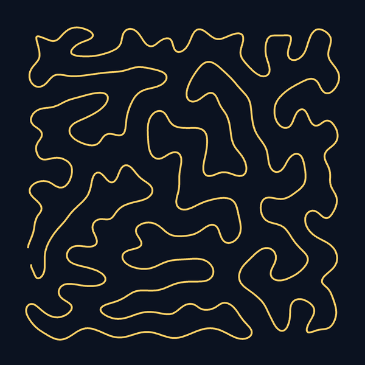
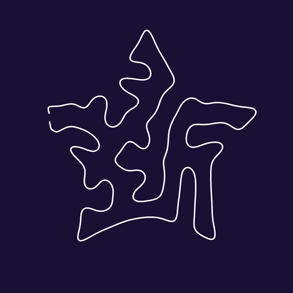
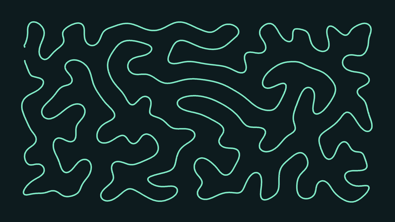
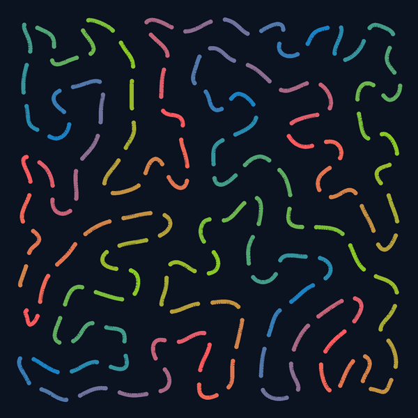
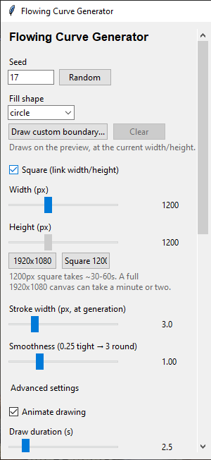
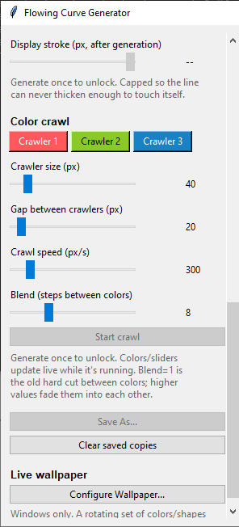
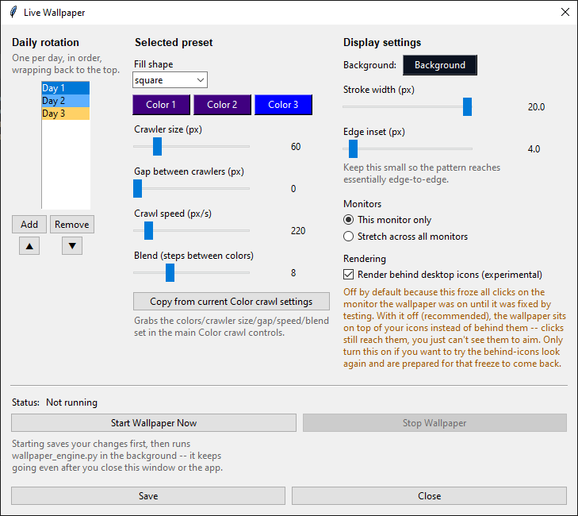

Install
One download does the rest: fetches the project, creates a Python virtual environment, installs dependencies, and opens the app.
You'll need Python 3.10 or newer installed first — on Windows, tick "Add python.exe to PATH" during its install. Everything after that, the installer handles for you, and it's safe to run again later to update to the latest version.
Windows
Double-click the downloaded file. If Windows shows a "Windows protected your PC" prompt, click More info → Run anyway — it's a plain, readable script, not a signed app, so Windows flags it as unrecognized rather than unsafe. Partway through, it'll ask whether to add a Desktop shortcut — press Y or N (you can add one later from the app itself either way).
macOS / Linux
Then, in a terminal, in the folder you saved it to:
chmod +x install.sh
./install.shIt creates a new FlowingCurveGenerator folder
right next to wherever you save the installer — it doesn't touch anything else on
your machine, and you can delete that folder any time to remove it completely.
What this is
organic_curve.py is the algorithm: it grows one unbroken line through a
shape, relaxing and re-checking itself so it never crosses or touches its own path,
and keeps a consistent breathing-room gap between neighboring strands. gui.py
is a desktop app built on top of it — sliders and buttons instead of command-line flags,
with a live preview, a draw-in animation, and a few presentation-only extras like color
themes and a looping "chasing lights" animation.
Good for generative wallpapers, poster line-art, laser/pen-plotter paths (it exports clean SVG), or just watching a curve fill a shape.
Examples




Features
Fill shapes
Square, circle, triangle, diamond, pentagon, hexagon, octagon, star — or draw your own closed boundary freehand on the preview.
Any canvas size
Square by default, or unlink width/height for any rectangle — including a 1920×1080 wallpaper preset — filled edge to edge with no cropping.
Draw-in animation
Watch the curve get traced stroke by stroke, like a pen drawing it, with a skip button and an adjustable duration.
Color crawl
A looping "chasing lights" animation: 3 customizable colors chase down the already-drawn curve, with adjustable crawler size, gap, and speed — plus a blend control that fades each color smoothly into the next instead of cutting sharply between them.
Live appearance controls
Line color, background color, and display stroke width are pure presentation — they re-render instantly without recomputing the curve.
Export
Save any result as PNG or SVG (with a validation report alongside it) for printing, plotting, or use as a desktop/phone wallpaper.
Pen-plotter export
A separate "Export for pen plotter..." SVG, sized in real-world millimeters to a page size you choose, with no filled background and an optional corner start point — ready to send straight to a plotter.
Live wallpaper (Windows)
Runs the color-crawl animation as an actual desktop wallpaper in the background, rotating through a set of presets you configure — one new look per day, throttled or paused automatically on battery power.
Screen saver (Windows)
The same rotation as a real Windows screen saver — fullscreen, closes on any input, with a live preview thumbnail in Windows' own Settings. Built, installed, and tried out entirely from the app itself.
Already have the code, or prefer to do it by hand?
The Install section above is the easiest path for most people. These are the alternatives, for anyone who already cloned the repository with git, or would rather manage their own virtual environment.
On Linux, if the app complains Tkinter is missing, install
it via your package manager (e.g. sudo apt install python3-tk on
Debian/Ubuntu) — Windows and macOS already include it with Python itself.
Already cloned the repo?
Every clone already includes its own launcher, right next to this page — it creates a virtual environment, installs dependencies, and starts the app (first run takes a little longer while it sets things up; every run after that is instant).
Windows: double-click run.bat
macOS / Linux: in a terminal, in this folder:
./run.sh(First time only, you may need chmod +x run.sh to make it executable.)
Manual setup
If you'd rather do it yourself, or already manage your own virtual environments:
# from inside the project folder
python -m venv .venv
# Windows
.venv\Scripts\activate
# macOS / Linux
source .venv/bin/activate
pip install -r requirements.txt
python gui.pyOn Windows, run.bat already asks about a Desktop
shortcut the first time it sets things up (see Install above). Said no,
or already cloned the repo some other way? Create Desktop Shortcut... at the
bottom of the sidebar does the exact same thing on demand — a "Flowing Curve Generator"
shortcut on your Desktop, pointing at run.bat, using the app's own icon.
How to use it
The sidebar is scrollable and split into two halves: everything above Generate shapes what gets made; everything below it presents, replays, or saves the curve you already generated.

Before you click Generate- Seed
- The random seed driving the layout. Same seed + same settings always reproduces the same curve; hit Random for a new one.
- Fill shape
- Pick a preset shape from the dropdown, or click Draw custom boundary... and drag a closed loop directly on the preview to fill a shape of your own. Clear removes a drawn boundary.
- Width / Height
- Canvas size in pixels. Leave Square (link width/height) checked to keep them equal, or uncheck it for a rectangle. The 1920×1080 and Square 1200 buttons are quick presets. Larger canvases take longer — a 1200px square is roughly 30–60 seconds; a full 1920×1080 canvas can take a minute or two.
- Stroke width
- Line thickness at generation time — this affects how tightly the curve can pack itself, not just how it looks.
- Smoothness
- How tightly (low) or loosely (high) the curve winds — from tight switchbacks to broad, round sweeps.
- Advanced settings
- Collapsed by default. Fine-tuning knobs: minimum ink gap, preferred gap, edge clearance, relax iterations, edge wave, and search attempts — the underlying algorithm's parameters, for anyone who wants to push past the defaults.
- Animate drawing / Draw duration
- Toggles the pen-tracing reveal animation after a generation finishes, and how long it takes to play out.
- Replay animation
- Re-plays the draw-in reveal for the curve you already generated (using whatever colors/stroke are currently selected) — no recomputation.
- Generate
- Runs the algorithm with the settings above. The progress bar and status line track it; Skip animation jumps straight to the finished frame if the draw-in reveal is running.
- Appearance
- Line and background color, plus Display stroke — all pure presentation, so they instantly re-render the already-computed curve instead of regenerating it. Display stroke is capped so it can never thicken enough to make the line touch itself.
- Color crawl
- A looping "chasing lights" animation along the finished curve. Pick 3 colors, and adjust crawler size, the gap between crawlers, crawl speed, and Blend (how many shades to fade through between colors, instead of cutting sharply from one to the next) — all update live while it's running. Start/Stop crawl toggles it.
- Save As...
- Saves the current result as a PNG or SVG file (plus a JSON validation report alongside it) wherever you choose.
- Export for pen plotter...
- A separate SVG built for plotting rather than viewing: real-world millimeter sizing to a page size you set (defaulting to the curve's own aspect ratio), no filled background, and an option to start the path near the top-left corner.
- Clear saved copies
- Empties the app's own
outputs/working folder of anything you've saved there before — the current on-screen preview is kept.
Live wallpaper (Windows)
wallpaper_engine.py runs the color-crawl animation as an actual
desktop wallpaper, in the background, independently of the main app — close
the window (or the app itself) and it keeps going. It shares its animation and
color-blend logic with the GUI's own preview, so what you see in
Configure Wallpaper... is exactly what ends up on your desktop.


What it does
- Daily rotation — a list of presets (add/remove/reorder as many "days" as you like), one shown per calendar day, wrapping back to the top.
- Per-preset editor — fill shape, 3 crawler colors, crawler size, gap, speed, and Blend (steps between colors), all independent per preset. Copy from current Color crawl settings grabs whatever's dialed in on the main preview so you can turn a look you like into a wallpaper day in one click.
- Display settings — background color, stroke width, and edge inset, shared across every preset.
- Monitors — run on just the monitor the app is on, or stretch the same pattern across all of them, with an independent process (and independent Start/Stop) per monitor.
- Start Wallpaper Now / Stop Wallpaper — saves your
changes and launches (or stops)
wallpaper_engine.pyas its own background process, so it survives closing the dialog, the app, or your sign-in session. - Battery-aware throttling — on a laptop running on battery, the animation automatically slows down, and pauses entirely below a low-battery threshold, resuming at full speed the moment it's plugged back in. On by default; a checkbox in this dialog turns it off.
Screen saver (Windows)
screensaver.py packages the same color-crawl animation as a real
Windows .scr screen saver — fullscreen, closes on any mouse
movement, click, or keypress, and shows a live thumbnail preview in Windows'
own Screen Saver Settings dialog. It reads the exact same
wallpaper_config.json as the live wallpaper above (so they share
one set of presets), but never advances or saves the daily rotation itself
— it's a read-only viewer, so there's no chance of it and the live
wallpaper racing to roll over the same day's preset.
Building and installing it
Everything below is a button in the app's Screensaver...
dialog (next to Configure Wallpaper...) — no terminal,
no .bat file, nothing outside the GUI:
- Preview now (fullscreen) — runs the real screen saver full-screen immediately, straight off your current settings, without needing to build or install anything first.
- Build .scr (PyInstaller)... — packages
screensaver.pyintoscreensaver.scr, right next togui.py, streaming the build's progress into a log box in the dialog. Takes a minute or two. - Install as screen saver — sets it as your active
Windows screen saver (a couple of registry values under
HKEY_CURRENT_USER, no administrator rights needed). - Turn off screen saver — switches your screen saver back off without touching anything else, from the same dialog.
- Open Windows Screen Saver Settings... — jumps straight to Windows' own dialog, for changing the idle wait time or checking the live preview thumbnail.
Packaging has to happen on a real Windows machine (PyInstaller builds for
whatever OS it runs on) — build_screensaver.bat and
install_screensaver.bat are also included, doing the exact same
thing from a double-click, for anyone who'd rather not open the app first.
Good to know
- Generation runs in a background thread, so the window stays responsive while it works — you can watch the progress bar rather than the app freezing.
- A drawn custom boundary is tied to the width/height it was drawn at; changing the canvas size afterward clears it, so it never silently fills a stale shape.
- Every Generate overwrites one set of preview files in
outputs/(nothing ever collides with a previous run) — use Save As... when you land on a result worth keeping.
Project files
| File | What it is |
|---|---|
organic_curve.py | The generation algorithm and PNG/SVG rendering — usable standalone from the command line, or imported by the GUI. |
gui.py | The desktop app (this is what run.bat / run.sh launch). |
wallpaper_engine.py | The background live-wallpaper process, launched by Start Wallpaper Now in gui.py's Configure Wallpaper... dialog — Windows only. |
screensaver.py | The screen saver — reuses wallpaper_engine.py's generation/rendering, packaged as a standard Windows .scr. Built, installed, and previewed from gui.py's Screensaver... dialog — Windows only. |
requirements.txt | Python dependencies (numpy, scipy, shapely, Pillow). |
run.bat / run.sh | One-click setup + launch, for Windows and macOS/Linux respectively — already in every clone. |
install.bat / install.sh | The standalone installer linked at the top of this page — downloads the whole project fresh, then hands off to run.bat / run.sh above. |
build_screensaver.bat / install_screensaver.bat | A no-GUI fallback for packaging/installing the screen saver — the Screensaver... dialog above does the same thing with a button instead. |
assets/ | The app's own icon (icon.png for the window/taskbar icon, icon.ico for the Create Desktop Shortcut... button's shortcut). |
outputs/ | Where the app writes the current preview and anything saved with "Save As...". |
wallpaper_config.json | Your saved wallpaper presets and settings — created on first use of Configure Wallpaper..., not part of the source. |